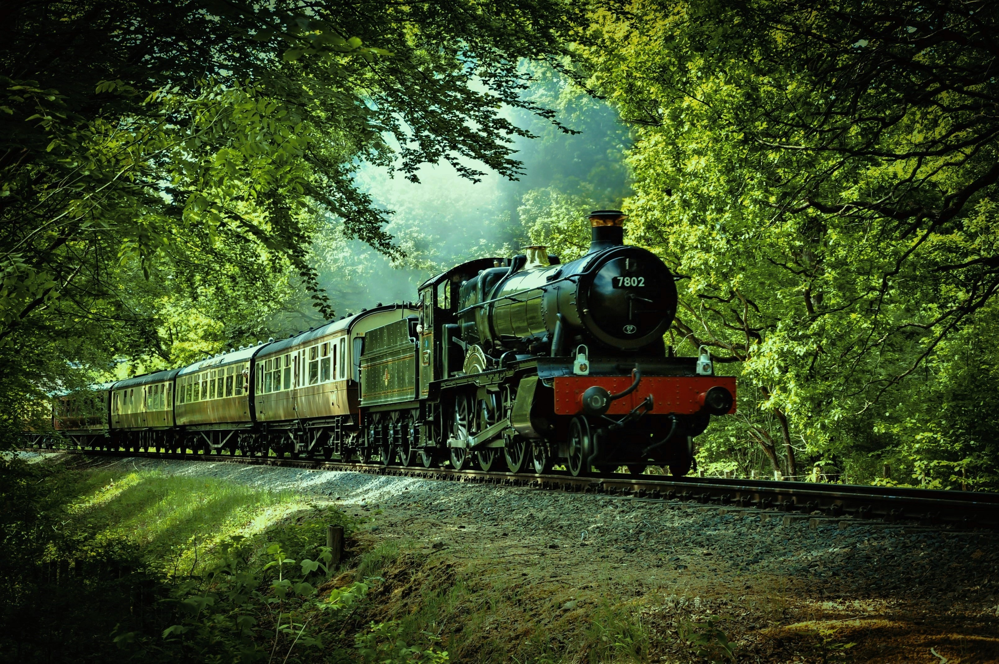
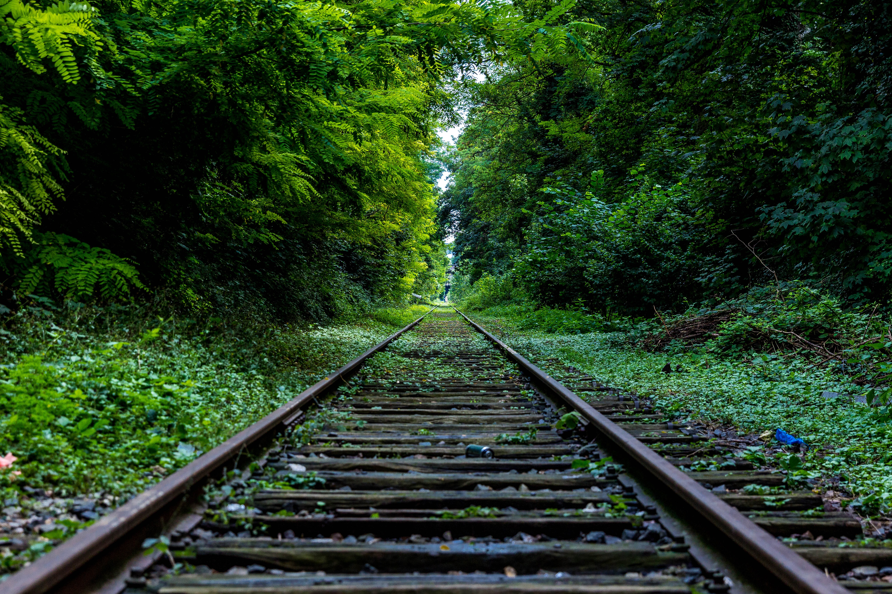

As we all know the Rail transport is the
backbone of the tranportaion almost all Country. But
do we ever know how does it work and what can it do and how many people has been involved in this.
If we take example of India we will astonished that India has higher number of employees in Railways sector than any other
Government organisation of India. According to Ministry of Railways(New Delhi) there are 1.23 million employees
are currently working with Indian Railways. Indian Railways is one of the public facilities given by the Government
and manages the fourth largest railways network in the world.
Some pictures of trains

